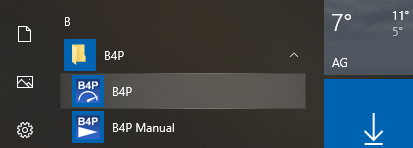

Starting a B4P Program on Windows
- Use the start menu
- Click on the B4P desktop icon (if activated during installation process)
"Description 02:"Using the Start Senu"
Start B4P using the start menu:

Click on the yellow folder B4P, the folder opens up, and then on the blue icon B4P to start the execution engine.
The following output will occur:
Wait 2 seconds and main.b4p starts, or hit any key to interrupt and enter interative mode
B4P - Beyond Former Performance
_______________________________________________________________________________
Version 8.00 Candidate (2020-11-12)
Copyright (C) 2012..2020 Georg zur Bonsen, all rights reserved.
*** No valid license found. For demos, education and evaluation only.
Some functional restrictions apply.
Starting 'Main.b4p' in two seconds... Press any key to interrupt. Done.
Main.b4p in C:\Users\Zur Bonsen Georg\Documents\Programs\B4P completed execution.
Feel free to add or change the code in this file.
Type 'help' for help, 'docs' or 'docs search' for online B4P documentation.
>> exit
exit (); called
Done - Press ENTER keyClicking on the B4P desktop icon
Double-click on the B4P desktop icon and B4P starts.
Start B4P Program with Windows Commands
Start cmd or alternatively powershell and type b4p or B4P.
Type B4P. The file name is not case senstive. command line switches may be applied.